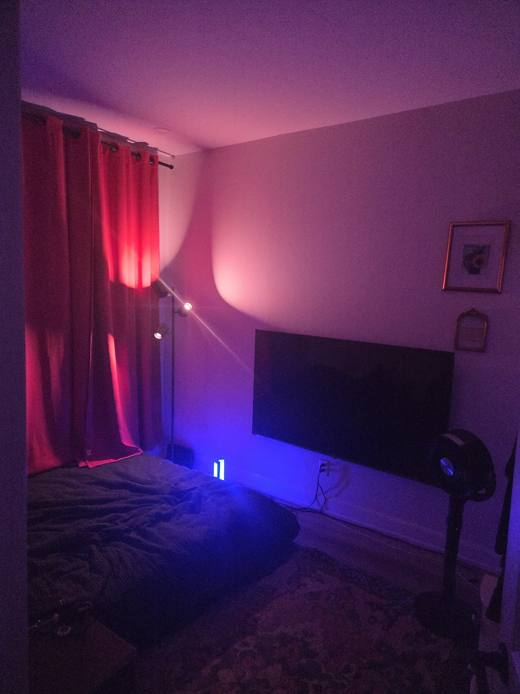

Back to It
A short one. Roofing season's got me. And my FOI documents came in.
It's been a while since the last one of these. No mystery to it — it's July, it's roofing season, and roofing season eats everything. That's not an excuse, it's just the shape of the year. Summer is when the work is, so summer is when I'm on a roof instead of at a keyboard. Anyone who's worked a trade knows the trade-off. I'd rather be honest about the gap than pretend it wasn't there.
What's actually going on
Long days, hot roofs, the usual physical grind of the season. Nothing under strain that's new — it's just full. Work's steady, which is the point of doing it, so I'm not going to complain about being busy in the way I want to be busy.
The FOI documents
The bigger thing: my Freedom of Information request came back. I'm sitting with it right now — reading through it, and starting to write something around it. I'm not going to get ahead of myself on what that piece becomes. Right now it's just me, the documents, and figuring out what's actually on the page versus what I remember living through.
That gap — between the file and the memory — might end up being the whole piece. More on that once I've actually finished reading it instead of just carrying it around.
Firsts
Hung real curtains. Bought a new TV and mounted it myself — first time I've ever done that, start to finish, on my own wall. Bought my own bedding, my own way, for the first time. None of it's complicated. All of it's new.

Same thing I said last time about the lamp and the blinds. It's not really about the TV. It's that I keep doing things for the first time in a room that's mine, on purpose, one piece at a time — instead of never getting the chance, or getting it all at once and not knowing what to do with it.
Steady is steady
Recovery's fine. Work's fine. This is just a season where the writing takes a back seat to the roof, and I'd rather say that plainly than go quiet without saying why.